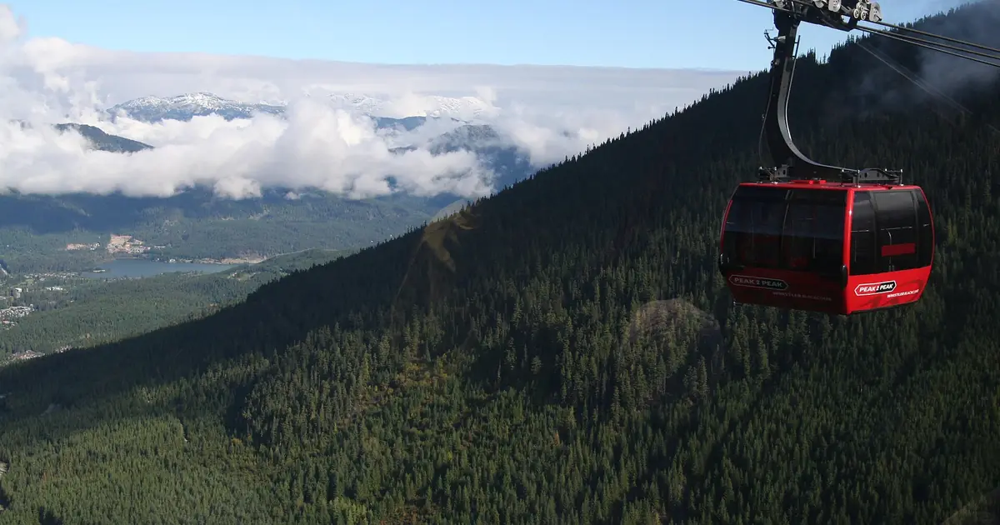

Previsión de nieve en el oeste de Canadá: hasta 74 cm en Whistler Blackcomb hasta el 9 de noviembre
Hasta el 9 de noviembre, nuestra previsión da 74 cm en Whistler Blackcomb, 63 cm en Ski Callaghan y 50 cm en Mount Cain Alpine Park. Las cifras de las estaciones de esquí son estimaciones del modelo para las pistas altas; las estaciones de medida miden en un punto, en la fecha indicada.
Consulta la previsión de nieve en tiempo real de Whistler Blackcomb en la app SnowScopeEspesor de nieve, alertas de nieve polvo y mapa 3D, gratis.
Lo que viene
Hasta el 9 de noviembre, nuestra previsión da 34 cm en Tweedsmuir Ski Club y 20 cm en Sasquatch.
La superficie nevada pasó de 323.230 km² el 4 de noviembre a 316.910 km² hoy, y nuestra previsión da 279.650 km² el 9 de noviembre.
| Estación | Espesor de nieve | Nieve nueva, 72 h | Previsto, próximos días | Cota máx. |
|---|---|---|---|---|
| Whistler Blackcomb | 78 cm | 33 cm | 74 cm | 2259 m |
| Ski Callaghan | 41 cm | 44 cm | 63 cm | 998 m |
| Mount Cain Alpine Park | 71 cm | 21 cm | 50 cm | 1616 m |
| Tweedsmuir Ski Club | 46 cm | 38 cm | 34 cm | 1650 m |
| Sasquatch | 17 cm | 11 cm | 20 cm | 1316 m |

Altitud, laderas y cota de nieve
En Whistler Blackcomb, la cota de congelación llega a 1260 m-2540 m el 7 de noviembre, por encima de la cota alta de la estación (2259 m): ese día puede haber lluvia o nieve húmeda en todas las pistas.
En Ski Callaghan, la cota de congelación llega a 1040 m-2140 m el 7 de noviembre, por encima de la cota alta de la estación (998 m): ese día puede haber lluvia o nieve húmeda en todas las pistas.
En Mount Cain Alpine Park, la cota de congelación llega a 1440 m-2540 m el 6 de noviembre, por encima de la cota alta de la estación (1616 m): ese día puede haber lluvia o nieve húmeda en todas las pistas.
La altitud cuenta: en Whistler Blackcomb, nuestro modelo da 50 cm en la cota alta (2259 m), 34 cm a media montaña (1456 m) y 0 cm en la base (653 m).
Dónde está la nieve hoy
De estas estaciones, Whistler Blackcomb tiene hoy más nieve en las pistas altas, unos 78 cm; después vienen Mount Cain Alpine Park 71 cm y Tweedsmuir Ski Club 46 cm.
52 de 57 estaciones en el oeste de Canadá tienen hoy nieve en las pistas altas, y nuestro modelo cuenta 316.910 km² de superficie nevada.
Seguridad y peligro de aludes
Las previsiones a varios días pueden cambiar: vuelve a mirar el mapa el día antes de viajar.
Consejos para esquiadores
- Las previsiones a varios días pueden cambiar: vuelve a mirar el mapa el día antes de viajar.
- Donde la cota de congelación suba por encima de la estación, cuenta con nieve húmeda y usa los remontes más altos.
- La nieve nueva es mejor en las primeras horas: sal temprano, antes del sol y de la gente.
- Antes de salir fuera de pista o de travesía, lee el boletín oficial de aludes (enlaces abajo).
- Activa una alerta de nieve polvo en la app SnowScope para saber cuándo Whistler Blackcomb recibe nieve nueva.
Sobre estas cifras
Los espesores de nieve de las estaciones son la nieve más profunda en las pistas altas según el modelo de nieve de SnowScope (unos 1 km, cálculo del 5 de noviembre); son estimaciones para una zona, no una medida en un punto. Los valores de las estaciones de medida son medidas en la fecha indicada. Las previsiones pueden cambiar. Consulta siempre el boletín oficial de aludes antes de salir fuera de pista.
Boletines oficiales de aludes: Avalanche Canada
Citar este informe
Para investigación, docencia o prensa: cifras y gráficos reutilizables libremente bajo CC BY 4.0 con esta cita.
SnowScope (2026), Previsión de nieve en el oeste de Canadá: hasta 74 cm en Whistler Blackcomb hasta el 9 de noviembre, https://snowscope.app/blog/es/2026/11/western-canada-snow-forecast-6-november-2026.html, consultado el 2026-11-06
SnowScope (Atlas Labs). (2026, November 6). Previsión de nieve en el oeste de Canadá: hasta 74 cm en Whistler Blackcomb hasta el 9 de noviembre. SnowScope snow reports. https://snowscope.app/blog/es/2026/11/western-canada-snow-forecast-6-november-2026.html
BibTeX
@misc{snowscope2026westerncanadasnowforecas,
author = {{SnowScope (Atlas Labs)}},
title = {Previsión de nieve en el oeste de Canadá: hasta 74 cm en Whistler Blackcomb hasta el 9 de noviembre},
year = {2026},
month = nov,
howpublished = {\url{https://snowscope.app/blog/es/2026/11/western-canada-snow-forecast-6-november-2026.html}},
note = {Published 2026-11-06 14:00 UTC; accessed 2026-11-06}
}· CC BY 4.0 · Métodos, datos y herramientas →
Whistler Blackcomb: nieve y temperatura según la altura, este invierno vs el pasado (herramientas) →
Más partes de nieve

Hasta el 7 de noviembre, nuestra previsión da 48 cm en Ski Callaghan, 47 cm en Whistler Blackcomb y 34 cm en Mount Cain Alpine Park. Las cifras de …

Nuestra tabla diaria de las estaciones con más nieve nueva prevista en las próximas 24 horas y hasta el 9 de noviembre, en Europa, Marruecos y …

Nuestro modelo de nieve para el 5 de noviembre de 2026 predice hasta 94 cm de nieve nueva en el oeste de Canadá para el domingo, con nevadas significativas también en los Alpes y el oeste de EE. UU.